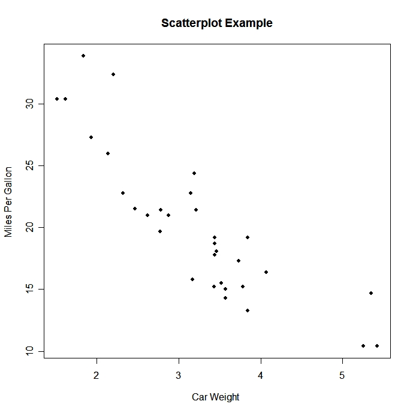
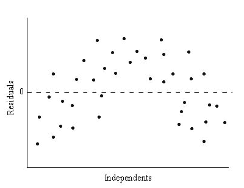

Topcis
- Scatterplots and Correlation
- Scatterplots display the relation between two quantitative variables measured on the same individuals
- x is the expalatory variable while y is the response variable
- When describing scatterplots, mention the direction, form, strength, and outliers
- Direction: If there is a clear direction, it either has a positive association or a negative association
- Form: Are the points in a straight pattern or do they curve?
- Strength: how close the points lie in a straight line
- The correlation coefficient r measures the strength and direction between two variables
- Scatterplots display the relation between two quantitative variables measured on the same individuals
- Least-Squares Regression
- A regression line describes how y changes with respect to x. This line can be used to predict the value of y given an x value
- Extrapolation is when x values outside the range of the data is used. This should be avoided since it can provide inaccurate results
- Least-squares regression lines are the most common method of fitting a line to a scatterplot
- This line minimizes the sum of the residuals squared
- Residuals are the difference between the observed and predicted values of y (y-\hat{y})
- A residual plot can be used to indicate if a linear model is appropriate if there is no pattern in the graph
- The standard deviation of residuals s measures the typical size of the prediction errors
- The coefficient of determination r^2 is the fraction of the variation in y that is accounted for by the line
Formulas
\LARGE
\hat{y}=a+bx
\\[20pt]
\LARGE
a=\bar{y}-b\bar{x}
\\[20pt]
\LARGE
b=r\frac{s_y}{s_x}
\\[20pt]
\LARGE
\text{residual}=y-\hat{y}
\\[20pt]
\LARGE
s=\sqrt{\frac{\sum{\text{residuals}^2}}{n-2}}=\sqrt{\frac{\sum{(y_i-\hat{y})^2}}{n-2}}
\\[20pt]
\LARGE
r=\frac{1}{n-1}\sum{z_xz_y}=\frac{1}{n-1}\sum{\frac{x_i-\bar{x}}{s_x}\frac{y_i-\bar{y}}{s_y}}
\\[30pt]
\LARGE
r^2=1-\frac{\sum{\text{residuals}^2}}{\sum{(y_i-\bar{y})^2}}
\\[20pt]
Terms
Review
- What is an approximate correlation coefficient for the following scatterplot? 
- A) 0.3
- B) -0.3
- C) 0.85
- D) -0.85
- What can be determined from the following residual plot? 
- A) A linear model is appropriate
- B) A linear model isn't appropriate
- C) Nothing
- D) None of the above
- A scientist wants to determine if the number of pirates in the world effects the global temperature. What is the relation between the number of pirates/global temperature
- A) response/explanatory
- B) explanatory/response
- C) independent/dependent
- D) dependent/independent
- TBD
- TBD